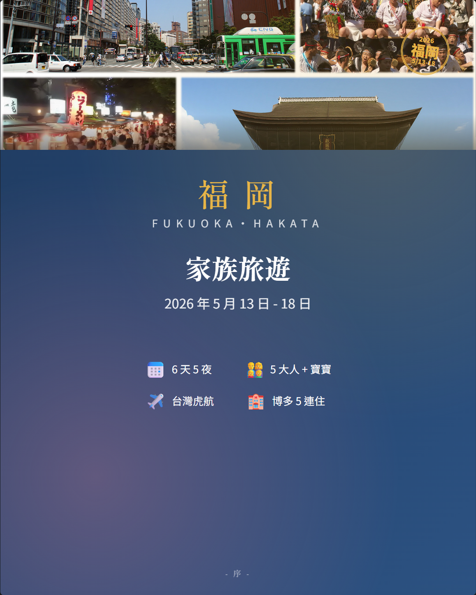
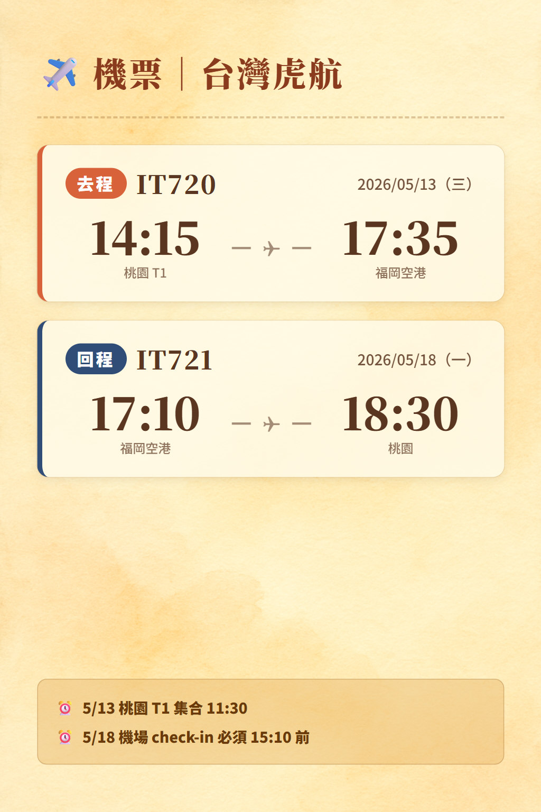
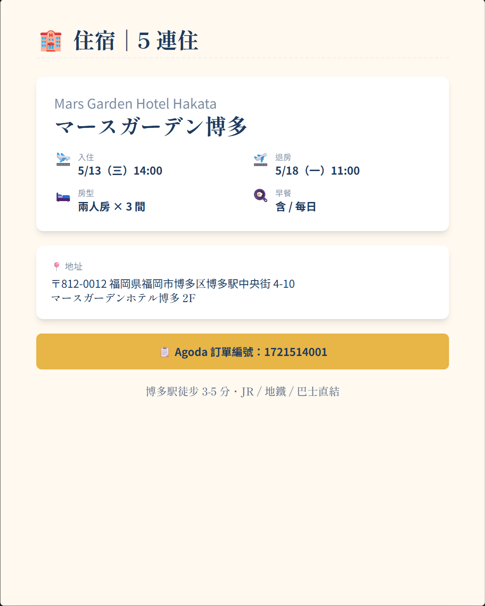
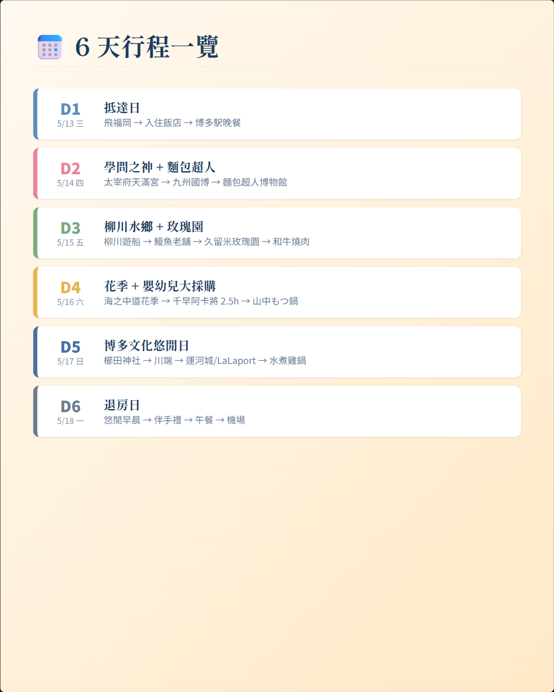
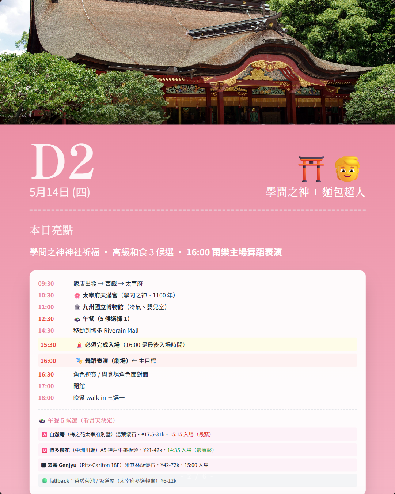
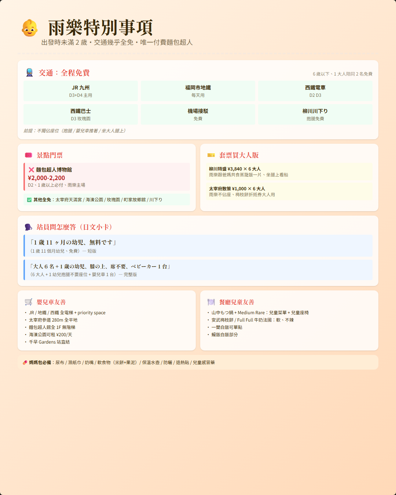
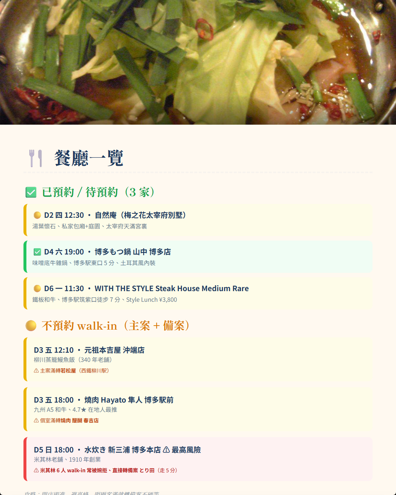
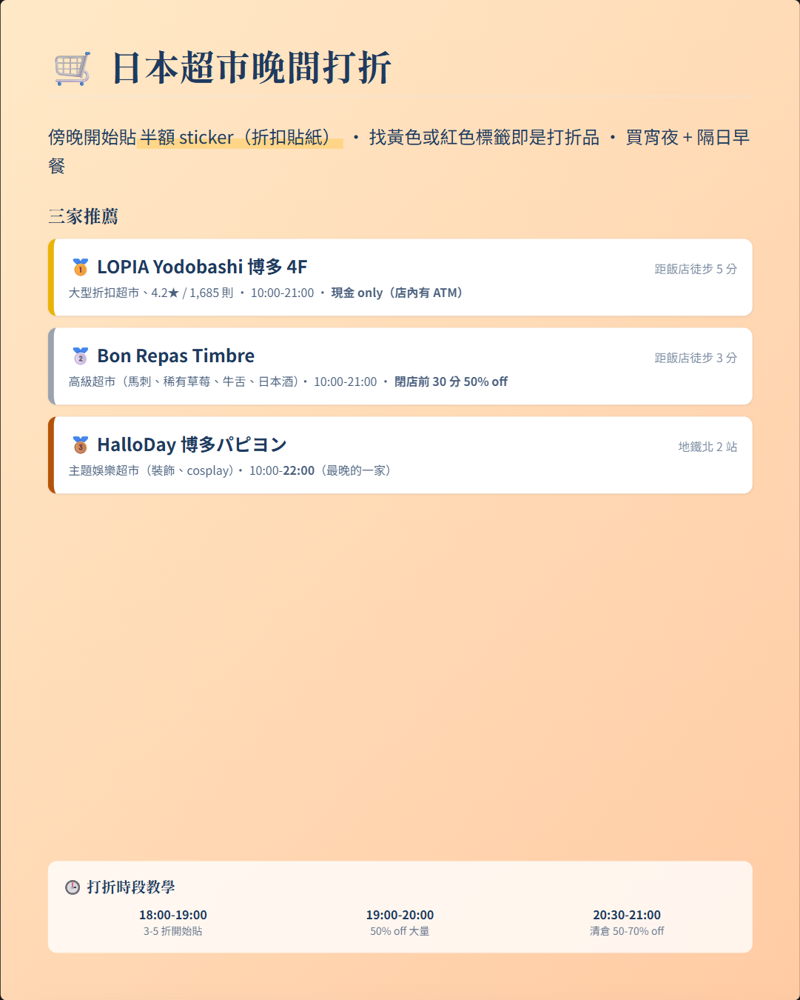
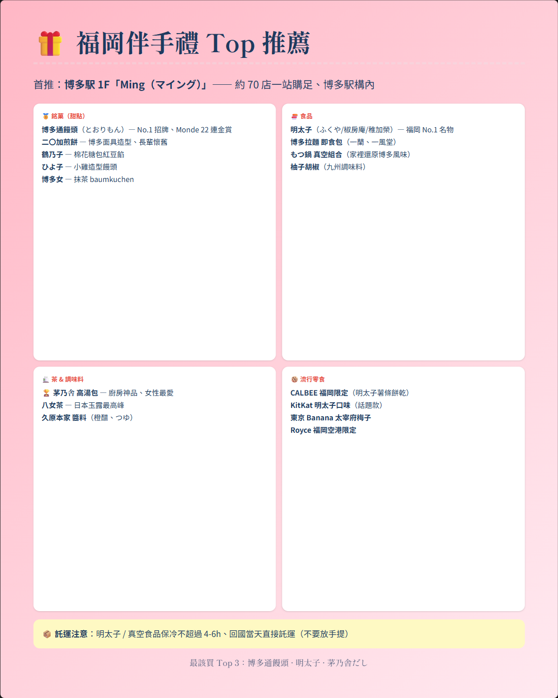
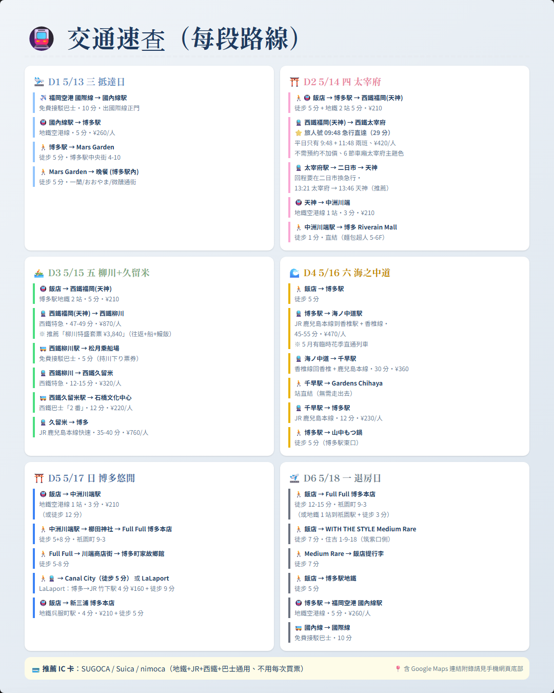

📍 Google Maps 一鍵導航
每個交通段都是可點擊連結、直接在 Google Maps App 開啟導航
🛬 D1 5/13 三 抵達日
♿ 福岡空港 → Mars Garden 輪椅動線
① 國際線 1F 入境 → 走 South Exit + South Elevator（不要走 North/1A）
② ノンステップ連節シャトルバス（10 分）→ 國內線 1F 南口下車
③ 1F 案內所（092-621-6059 可借輪椅）→ 🛗 電梯下 B1 國內線改札（地鐵）
④ 地鐵 2 站 → 博多駅 → 🛗 月台電梯 → 中央口（不要走博多口/筑紫口）→ 過馬路即 Mars Garden
② ノンステップ連節シャトルバス（10 分）→ 國內線 1F 南口下車
③ 1F 案內所（092-621-6059 可借輪椅）→ 🛗 電梯下 B1 國內線改札（地鐵）
④ 地鐵 2 站 → 博多駅 → 🛗 月台電梯 → 中央口（不要走博多口/筑紫口）→ 過馬路即 Mars Garden
✈️ 福岡空港國際線 → Mars Garden Hotel
📍 Mars Garden Hotel Hakata（飯店地點）
🕶️ D1 黃金時段：KITTE 8F JINS 配鏡 + B2 めんたい重 dinner（同棟一條龍）
18:50 全家走 5 分到 KITTE 博多
19:00 🕶️ JINS 8F 量度數 + 選鏡框 + 開單（多人平行）
19:30 🍱 下 B2 博多めんたい重 walk-in dinner（明太子重 + 鯛茶漬、雨樂吃白飯、¥1,800-2,500/人）
20:30 🕶️ 上 8F 取鏡（30-60 分配片完成）
20:45 走回飯店
⚠️ D1 不去 KITTE 9F もつ鍋、保留給 D3 dinner（避免重複）
⚠️ LOPIA 折扣超市改 D2 Canal City dinner 後 / D5 とり田後 路過
19:00 🕶️ JINS 8F 量度數 + 選鏡框 + 開單（多人平行）
19:30 🍱 下 B2 博多めんたい重 walk-in dinner（明太子重 + 鯛茶漬、雨樂吃白飯、¥1,800-2,500/人）
20:30 🕶️ 上 8F 取鏡（30-60 分配片完成）
20:45 走回飯店
⚠️ D1 不去 KITTE 9F もつ鍋、保留給 D3 dinner（避免重複）
⚠️ LOPIA 折扣超市改 D2 Canal City dinner 後 / D5 とり田後 路過
🕶️ JINS KITTE 博多店（8F、強推）
🕶️ JINS アミュプラザ博多店（5F、次推備援）
🍱 博多めんたい重 KITTE B2（D1 dinner 主案、與 JINS 同棟）
⛩️ D2 5/14 四 太宰府 + 博多軸線採購
♿ D2 輪椅完整動線
地鐵天神 → 西鐵福岡(天神)：左轉地下街向西 50m → 🛗 Solaria Stage 大樓電梯上 2F → 北口（🚨 三越口/南口無電梯！）
太宰府天滿宮：太鼓橋全是階梯 → 走左側池畔迂回路。本殿改修中、用「仮殿」（平坦無段差）。境內案內所可借輪椅
太宰府回程二日市換車：🚨 必走東口（西口無電梯）→ 跨線橋電梯換急行
吉塚 Workman：JR 吉塚徒步 8-10 分人行道窄、建議直接 GO ワゴン ¥500-700
Canal City 噴水秀：最佳輪椅觀景在 B1F 廣場正面/兩側（平面）、演出前 5 分卡位、4F Don Q 直達電梯
🍡 streetfood 4 家：福太郎 + YAMAYA 在駅前平地（最友善）、安武+天山 在參道石畳上、店外接餅 OK
太宰府天滿宮：太鼓橋全是階梯 → 走左側池畔迂回路。本殿改修中、用「仮殿」（平坦無段差）。境內案內所可借輪椅
太宰府回程二日市換車：🚨 必走東口（西口無電梯）→ 跨線橋電梯換急行
吉塚 Workman：JR 吉塚徒步 8-10 分人行道窄、建議直接 GO ワゴン ¥500-700
Canal City 噴水秀：最佳輪椅觀景在 B1F 廣場正面/兩側（平面）、演出前 5 分卡位、4F Don Q 直達電梯
🍡 streetfood 4 家：福太郎 + YAMAYA 在駅前平地（最友善）、安武+天山 在參道石畳上、店外接餅 OK
⭐ 旅人號觀光列車（必搭 9:48 天神発）
5/14 平日直達車只有 9:48 + 11:48 兩班、必搭 9:48！
📍 上車：西鐵福岡（天神）駅 1 號月台
⏱ 9:48 天神発 → 10:17 太宰府着（直達 29 分）
💴 ¥420/人、不需預約不加價、雨樂免費
🎫 強推「太宰府散策套票 ¥1,000 × 6 大人 = ¥6,000」（含來回 + 梅枝餅 ¥500 折抵券、省 ¥2,040）
🛒 案内所購買：西鐵福岡（天神）駅 1F
⚠️ 回程：13:51 太宰府発（普通）→ 13:57 二日市換急行 → 14:18 天神（天神下車逛 UNIQLO 大店）
→ 旅人號官方頁面
📍 上車：西鐵福岡（天神）駅 1 號月台
⏱ 9:48 天神発 → 10:17 太宰府着（直達 29 分）
💴 ¥420/人、不需預約不加價、雨樂免費
🎫 強推「太宰府散策套票 ¥1,000 × 6 大人 = ¥6,000」（含來回 + 梅枝餅 ¥500 折抵券、省 ¥2,040）
🛒 案内所購買：西鐵福岡（天神）駅 1F
⚠️ 回程：13:51 太宰府発（普通）→ 13:57 二日市換急行 → 14:18 天神（天神下車逛 UNIQLO 大店）
🚆 博多駅 → 太宰府（含旅人號）
📍 太宰府天滿宮
🚆 太宰府 → 天神（13:51 → 14:18）
🛍️ UNIQLO 天神店（1F+2F、福岡市內最大）
🚇 天神 → 博多 → 飯店午睡（15:30-17:00）
👷 Workman Plus 吉塚店
💻 Yodobashi Camera Multimedia 博多（3C 旗艦）
🌊 Canal City（19:00 噴水秀 + Don Quijote 4F）
🚣 D3 5/15 五 柳川 + 久留米
♿ D3 輪椅完整動線（最高難度日）
西鐵福岡 → 柳川：北口進、特急車椅子席通常在 1/6 號車（兩端）
🚣 川下り：🚨 5/14 必打 0944-72-6177 預約「車椅子で乗船希望」、船員 + 岸上 staff 介助、輪椅整台搬上船+船首固定。雨天/波大改御花庭園散策
🍱 lunch ⭐ 改若松屋（不去本吉屋）：官網明示「車椅子バリアフリー化」+ 椅子席、4.5★、必預約 0944-72-3163「6 名・車椅子・椅子席希望」
玫瑰園：入口 15cm 段差有 slope（坡度略陡）、推薦從西鐵久留米駅直接搭計程車到車椅子駐車場
🍲 dinner ⭐ 改 KITTE もつ鍋おおやま 9F（焼肉 Hayato 退、無バリアフリー）：4.7★/5,095、KITTE 全層多功能廁所、6 人 walk-in
🚣 川下り：🚨 5/14 必打 0944-72-6177 預約「車椅子で乗船希望」、船員 + 岸上 staff 介助、輪椅整台搬上船+船首固定。雨天/波大改御花庭園散策
🍱 lunch ⭐ 改若松屋（不去本吉屋）：官網明示「車椅子バリアフリー化」+ 椅子席、4.5★、必預約 0944-72-3163「6 名・車椅子・椅子席希望」
玫瑰園：入口 15cm 段差有 slope（坡度略陡）、推薦從西鐵久留米駅直接搭計程車到車椅子駐車場
🍲 dinner ⭐ 改 KITTE もつ鍋おおやま 9F（焼肉 Hayato 退、無バリアフリー）：4.7★/5,095、KITTE 全層多功能廁所、6 人 walk-in
🚆 西鐵福岡(天神) → 西鐵柳川
📍 松月乘船場（柳川川下り）
📍 ⭐ 若松屋（D3 lunch 主案、♿ 無障礙+椅子席）
📍 ~~元祖本吉屋 沖端店~~（退為 fallback、輪椅進入有風險）
🚆 西鐵柳川 → 石橋文化中心（久留米玫瑰園）
🚆 久留米 → 博多
🌊 D4 5/16 六 海之中道 + 千早
♿ D4 輪椅完整動線
JR 博多 → 香椎 → 海ノ中道：改札進站告訴駅員「車椅子、海ノ中道まで」→ 駅員月台斜板 + 無線通報。香椎換香椎線預留 8 分（單線、班距 30 分、🛗 全月台電梯）
海ノ中道駅：✅ 平層、無階梯、無人駅但月台會有人協助斜板
🌸 海濱公園：⭐ 入口案內所申請電動カート（身障手帳免費）+ パークトレイン（園內周遊巴士、輪椅可上）。300ha 太大不可徒步、🚻 全園 47 處廁所/30 處多功能
千早 アカチャンホンポ：✅ 千早駅 1F 西口直接平面通往 Gardens 1F、館內全電梯
🍲 山中もつ鍋（D4 dinner 已預約）：🚨 必打 092-260-8517 確認 ハカタベビル 2F 是否有電梯、預約備註「車椅子、椅子席希望、掘り炬燵不要」
海ノ中道駅：✅ 平層、無階梯、無人駅但月台會有人協助斜板
🌸 海濱公園：⭐ 入口案內所申請電動カート（身障手帳免費）+ パークトレイン（園內周遊巴士、輪椅可上）。300ha 太大不可徒步、🚻 全園 47 處廁所/30 處多功能
千早 アカチャンホンポ：✅ 千早駅 1F 西口直接平面通往 Gardens 1F、館內全電梯
🍲 山中もつ鍋（D4 dinner 已預約）：🚨 必打 092-260-8517 確認 ハカタベビル 2F 是否有電梯、預約備註「車椅子、椅子席希望、掘り炬燵不要」
🚆 博多駅 → 海ノ中道駅
📍 海之中道海濱公園
🚆 海ノ中道 → 千早駅
📍 阿卡將本舖 千早店（Gardens Chihaya 2F）
📍 山中もつ鍋 博多店（已預約 19:00）
⛩️ D5 5/17 日 雨樂主場 + 博多老街
♿ D5 輪椅完整動線
博多 → 中洲川端：地鐵 1 站、🛗 月台中央電梯 → 川端口改札 → 必走 6 號出口（不要 4/7 號）→ 直通博多リバレインモール
櫛田神社：南神門最平坦、拜殿前有 slope、境內車椅子貸出。境內可駕車進入給身障（9-16:30、30 分內）
Full Full：⚠️ 必打 092-292-7838 確認內用吧台 OK / Plan B：外帶在町家ふるさと館外吃
博多町家：✅ 只看展示棟（無障礙完備）、町家棟天井低撞頭、外觀拍照即可
麵包超人館：🛗 Elevator A/B 上 5F、館內全 1F 平面、🎭 Stage 有「車椅子専用席」、進場跟 staff 說「車椅子席希望」、092-291-8855 確認折疊輪椅可入館
🐓 とり田：🚨 預約 092-272-0920 必明示「車椅子で来店、1F 椅子席希望」（不要被帶到 2F）
🌙 屋台：⛔ 媽媽不去、Jack+太太自己去 / ⚠️ 5/17 第 3 週日 → 小金ちゃん 公休、不執著名店、現場走、看哪攤人多+有位就坐 / 🅰️ 中洲川邊 vs 🅱️ 赤坂駅屋台帶（網友推、人少進化型）
櫛田神社：南神門最平坦、拜殿前有 slope、境內車椅子貸出。境內可駕車進入給身障（9-16:30、30 分內）
Full Full：⚠️ 必打 092-292-7838 確認內用吧台 OK / Plan B：外帶在町家ふるさと館外吃
博多町家：✅ 只看展示棟（無障礙完備）、町家棟天井低撞頭、外觀拍照即可
麵包超人館：🛗 Elevator A/B 上 5F、館內全 1F 平面、🎭 Stage 有「車椅子専用席」、進場跟 staff 說「車椅子席希望」、092-291-8855 確認折疊輪椅可入館
🐓 とり田：🚨 預約 092-272-0920 必明示「車椅子で来店、1F 椅子席希望」（不要被帶到 2F）
🌙 屋台：⛔ 媽媽不去、Jack+太太自己去 / ⚠️ 5/17 第 3 週日 → 小金ちゃん 公休、不執著名店、現場走、看哪攤人多+有位就坐 / 🅰️ 中洲川邊 vs 🅱️ 赤坂駅屋台帶（網友推、人少進化型）
📍 櫛田神社（博多総鎮守）
🥖 Full Full 博多本店（11:00 預訂取貨 RES2413）
📍 博多町家ふるさと館
🧒 麵包超人兒童博物館（13:30-16:30 重頭戲）
🐓 とり田 博多本店（18:00 dinner 主案）
🌙 21:00 後 屋台（Jack + 太太可選、二選一）
⚠️ 5/17 第 3 週日 → 小金ちゃん 公休、不執著名店、現場走+找位
⛔ 媽媽 + 長輩 + 雨樂回飯店休息（小空間+不接小孩）
🅰️ 中洲屋台街（傳統觀光）
21:00 飯店 → 中洲川端 6 號出口（地鐵 1 站 5 分）→ 川邊現場走、看哪攤人多+有位就坐
路上看：武ちゃん（鐵鍋餃子）/ 鬼多郎（焼鳥）/ やまちゃん（拉麵）/ KENZO（焼きラーメン）
🅱️ 赤坂駅屋台帶（網友推 ⭐、人少進化型）
21:00 飯店 → 博多 → 赤坂（地鐵 4 站 12 分 ¥260）→ 21:15 抵
🥇 Telas&mico（4.6★ 童話風 fusion）/ 🥈 赤ちょうちん（4.8★ 經典）/ 🥉 鬼太郎（4.6★ 焼鳥）
bonus 長浜屋台街（赤坂北 10 分）：Tamachan / Dogenya 長浜ラーメン
22:45 GO 計程車回飯店 ¥1,200
💡 怎麼選：拍照打卡→中洲；好吃安靜→赤坂；下雨→赤坂（多在棚下）
⛔ 媽媽 + 長輩 + 雨樂回飯店休息（小空間+不接小孩）
🅰️ 中洲屋台街（傳統觀光）
21:00 飯店 → 中洲川端 6 號出口（地鐵 1 站 5 分）→ 川邊現場走、看哪攤人多+有位就坐
路上看：武ちゃん（鐵鍋餃子）/ 鬼多郎（焼鳥）/ やまちゃん（拉麵）/ KENZO（焼きラーメン）
🅱️ 赤坂駅屋台帶（網友推 ⭐、人少進化型）
21:00 飯店 → 博多 → 赤坂（地鐵 4 站 12 分 ¥260）→ 21:15 抵
🥇 Telas&mico（4.6★ 童話風 fusion）/ 🥈 赤ちょうちん（4.8★ 經典）/ 🥉 鬼太郎（4.6★ 焼鳥）
bonus 長浜屋台街（赤坂北 10 分）：Tamachan / Dogenya 長浜ラーメン
22:45 GO 計程車回飯店 ¥1,200
💡 怎麼選：拍照打卡→中洲；好吃安靜→赤坂；下雨→赤坂（多在棚下）
🅰️ 🌙 中洲屋台街（傳統 30+ 攤、川景）
🅱️ 🌙 Telas&mico 赤坂屋台（4.6★ 童話風 fusion）
🅱️ 🌙 赤ちょうちん（4.8★ 赤坂帶評分最高）
🅱️ bonus 🌙 長浜屋台（長浜ラーメン發源地）
🛫 D6 5/18 一 退房日
♿ D6 輪椅完整動線
🥩 Medium Rare：✅ 公式明示 wheelchair accessible、🚨 追加打 092-433-3960 備註「車椅子、鐵板燒櫃台高度調整 + 短時間立位移乗 OK」、從 WITH THE STYLE 飯店 lobby 走バリアフリー入口最確實
🛫 飯店 → 機場：💡 推薦改用 GO app 叫ワゴン直送國際線（¥1,800、12 分、6 人輪椅免換航廈接駁）、最省力
備案地鐵：博多駅中央口 → 🛗 → 地鐵 → 福岡空港駅 → 1F 國內線 → South Exit + South Elevator → ノンステップシャトルバス → 國際線 4F 出境
🛫 飯店 → 機場：💡 推薦改用 GO app 叫ワゴン直送國際線（¥1,800、12 分、6 人輪椅免換航廈接駁）、最省力
備案地鐵：博多駅中央口 → 🛗 → 地鐵 → 福岡空港駅 → 1F 國內線 → South Exit + South Elevator → ノンステップシャトルバス → 國際線 4F 出境
🚶 Mars Garden → Full Full 博多本店
📍 WITH THE STYLE Steak House Medium Rare（已預約 11:30）
🛫 Mars Garden → 福岡空港國際線
🍽️ 餐廳推薦菜單（讓長輩快速點）
每家餐廳列 Google reviews 真實心得萃取的招牌菜・點擊餐廳名開 Maps
🛬 D1 5/13 三 晚餐：KITTE B2 めんたい重（主案）+ 3 備案
💡 D1 dinner 配合 JINS KITTE 8F 配鏡安排：19:30 入店 → 30-45 分快食 → 20:30 上 8F 取鏡。
❌ D1 不去 KITTE 9F もつ鍋おおやま、保留給 D3 dinner 體驗（避免 6 天內重複同店）。
❌ D1 不去 KITTE 9F もつ鍋おおやま、保留給 D3 dinner 體驗（避免 6 天內重複同店）。
🍱 博多めんたい重 KITTE 博多 B2
💡 配鏡 + dinner + 取鏡 0 路程切換、雨樂可吃白飯、♿ 電梯下 B2 平面通道
🍱 釜飯 椒房庵 博多 Deitos 1F
💡 6 人最舒服、長輩友善、♿ 1F 平面 + 個室訂位
🍶 博多 Deitos ほろよい通り B1F
💡 6 人可分桌、想喝一杯、不確定就直接挑人多的進
🍜 一蘭 博多駅 Sun Plaza B2F
💡 飛機累、想最快收尾的選項、個人小隔間座位
⛩️ D2 5/14 四 太宰府參道 Streetfood 4 家
🍓 天山（草莓大福）
💡 站著吃、有時排 5 分、5 月草莓季尾聲必嘗
🍙 福太郎 太宰府店（明太子烤飯糰）
💡 點完拿號碼牌、約 10-15 分等現烤
🥖 YAMAYA BASE（明太法國）
💡 沒座位站著吃、6 人共食 1-2 條剛剛好
🚣 D3 5/15 五 柳川 + 久留米
🍱 元祖 本吉屋 沖端店（lunch 主案）
⚠️ 全 tatami 座、需脫鞋、不收信用卡（現金 only）、6 人 walk-in 12:10 衝早
🍱 若松屋（lunch 備案）
💡 評分 + 評論數比本吉屋高、有信用卡、有日式庭園 view、tatami 座
🥩 燒肉 Hayato 隼人 博多駅前（dinner 主案）
⚠️ 必點 1 飲料/人、portion 較小、18:00 開店即進（4.7★/2,494 排隊熱門）
🥩 須藤 春吉店 Sudou Haruyoshi（dinner 備案）
💡 替換原本 plan 列錯的「醍醐」、廚師代煎適合長輩、有預約 + 信用卡
🌊 D4 5/16 六 dinner（已預約）
🍲 博多もつ鍋 山中 博多店
💡 土耳其風內裝精緻、有兒童菜單、無障礙、湯可續
⛩️ D5 5/17 日 lunch + dinner
🥖 Full Full 博多本店（lunch、預訂取貨）
⚠️ Reviews 不推：鹽麵包（無味）/ 一些瑪卡類麵包不夠 wow
🐓 とり田 博多本店（dinner 主案、新主推）
💡 現代化木質空間、不用脫鞋、長輩友善、6 hr 燉雞湯 reviews 一致大推 / 建議線上先預約
❌ 新三浦 博多本店（已換 — 週日公休）
⚠️ 5/17 週日撲空、改 とり田 為主案
🌙 21:00 後 屋台（Jack + 太太可選、二選一）
🅰️ 中洲屋台街（傳統觀光、30+ 攤川景）
💡 想拍照打卡網美 / 晴朗夜 → 選這條（霓虹川景必拍）
🅱️ 赤坂駅屋台帶（網友推 ⭐ 進化型、人少安靜）
💡 想真的好吃 + 安靜不擠 + 下雨夜 → 選這條（觀光客少、進化型菜系）
🅱️ bonus 長浜屋台街（長浜ラーメン發源地）
💡 走完赤坂主推、深夜 22:00 後想吃碗ラーメン收尾的選項
🛫 D6 5/18 一 lunch（已預約）
🥩 WITH THE STYLE Steak House Medium Rare
💡 板前座位、師傅單一服務、有兒童菜單、英文菜單、無障礙